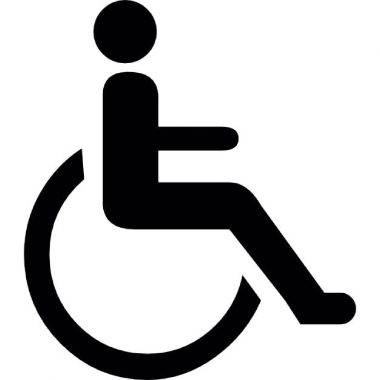

PLANO DE ACESSIBILIDADES 
{{request_type}}
{{construction_type}}

PLANO DE ACESSIBILIDADES
{{request_type}}
(com base n.º 2 do Artigo 14.º do RJUE, na sua atual redação)
DE OBRAS DE {{construction_type}}
{{construction_address}}
{{land_registry_location}}
REQUERENTE
{{requester_name}}
NIF. {{requester_nif}}
AUTOR
{{author_name}}
OASRS. {{author_registration}}
{{location}}, novembro de 2024
ÍNDICE
- Peças Escritas
- Memória Descritiva e Justificativa
- Peças Desenhadas
- Desenho n.º "P.A.01" – Plano de Acessibilidades, escala 1/100
MEMÓRIA DESCRITIVA E JUSTIFICATIVA
Plano de Acessibilidades
- INTRODUÇÃO
A presente memória refere-se à descrição das soluções de detalhe métrico, técnico e construtivo, demonstrando o cumprimento das disposições aplicáveis no caso concreto, definidas no Decreto-Lei n.º 163/2006 de 8 de agosto, na sua redação atual, onde é regulado o espaço construído no sentido de o tornar acessível a todos, nomeadamente a pessoas com mobilidade condicionada. Trata-se da definição dos procedimentos construtivos para dar resposta ao regime das acessibilidades.
Procura-se explicitar as opções tomadas em função do compromisso entre o desenho e o cumprimento das normas descritas em anexo do referido Decreto-Lei. As soluções abordam o espaço público adjacente, nomeadamente a via pública adjacente, os percursos desde este arruamento público até à entrada principal da moradia, assim como o percurso desde o estacionamento até ao pavimento da entrada principal.
Foi estudado o espaço interior, no sentido de dar resposta às exigências da legislação sobre as acessibilidades.
O presente projeto de uma habitação ({{construction_type_short}}), procurou a conformidade com o disposto no Decreto-Lei n.º 163/2006, de 8 de agosto, na sua redação atual, nomeadamente no que consta na Secção 3.3 (Edifícios de Habitação – habitações) do Capítulo 3.
-
ESPAÇO PÚBLICO
Na área de intervenção, o espaço público deverá cumprir os requisitos da acessibilidade definidos no Capítulo I, secção 1.1 das "Normas técnicas para melhoria da acessibilidade das pessoas com mobilidade condicionada" do referido Decreto-Lei, nomeadamente quanto à continuidade, à ligação ao lote construído e à largura mínima livre medida ao nível do pavimento, definida na secção 4.3.
Não se prevê elementos que obstruam uma altura mínima livre de 2,40m, tal o especificado no ponto 4.5.1, assim como objetos salientes colocados nos muros que ponham em causa a largura e a altura mínimas livres. Não se verifica a aplicação do especificado na secção 4.6 por não se prever objetos salientes.
Em relação aos revestimentos dos pisos, este deverá ser estável, durável, firme e contínuo (juntas das peças não deverão ter profundidades ou ressaltos superiores a 0,005m), conforme exigido na secção 4.7. O pavimento deverá permitir ainda uma rápida drenagem das águas pluviais. No presente projeto, entende-se que a materialidade proposta cumpre com os requisitos indicados e não prevê ressaltos no piso do interior da edificação que comprometam a continuidade do pavimento, pondo em causa as condições de acessibilidade do mesmo.
No que concerne aos restantes requisitos deste parâmetro, não se prevê escadarias ou outros elementos que exijam cuidados específicos.
-
PERCURSO ACESSÍVEL – ARRUAMENTO PÚBLICO E ENTRADA PRINCIPAL DA MORADIA
Em relação às áreas privativas exteriores, a proposta foi elaborada em função do especificado na secção 2.1, quanto à criação de pelo menos um percurso acessível que proporcione o "acesso seguro e confortável das pessoas com mobilidade condicionada entre a via pública, o local de entrada/saída principal e todos os espaços interiores e exteriores que o constituem". De uma forma geral, os percursos acessíveis aqui descritos foram equacionados em função das disposições definidas no Capítulo 4 do anexo da referida legislação.
Dadas as características do terreno, assim como a cota de soleira definida, o percurso exige a alternância de cotas, com um vencimento em altura de 0,21cm. Não sendo possível marcar um percurso direto, sem alternância de cotas, até à respetiva entrada principal, será executada através de degraus perfeitamente regulamentares. Paralelamente, prevê-se condições espaciais e técnicas para a eventual instalação de uma rampa, com inclinação inferior a 6% e uma largura superior a 0,90 m, representada nas peças desenhadas do presente plano de acessibilidades.
As plataformas na base e no topo da rampa possuem dimensões medidas na direção do movimento superiores ao especificado no ponto 2.5.4, sendo que na base é garantido espaço para rotação de 360o, dado que se trata da plataforma de entrada e as restantes normas exigíveis nos restantes pontos da respetiva legislação.
O percurso acessível que procuramos materializar será comum a indivíduos sem mobilidade condicionada, garantindo uma largura livre nunca inferior a 1,50m e com as áreas de transição possíveis de serem demarcadas para uma rotação de 360o.
O arruamento pelo qual se coloca o portão de entrada / automóvel e que permite o acesso à entrada principal, terá um ressalto nunca superior a 0,02m e com respectiva aresta boleada com um raio de 0,02 m.
Os revestimentos dos pisos terão condições de resistência e durabilidade que entendemos respeitar o especificado na secção 4.7, nomeadamente no equilíbrio dos reflexos das superfícies que devem localizar em valores compreendidos entre 15% e 40%, com cores nem muito claras nem muito escuras, tal o definido no ponto 4.7.2. As placas serão colocadas de forma a garantir continuidade com os outros materiais de revestimento do pavimento, nomeadamente no percurso acessível, não sendo previsto ressaltos no piso superiores a 0,005 m. Não é prevista qualquer inclinação transversal à direção do percurso acessível.
O portão de entrada da habitação para peões terá uma largura útil mínima de {{access_width}} m, medida quando a respetiva folha se encontrar em ângulo de abertura de 90o, pelo que se garante zonas livres de manobra especificadas no ponto 4.9.6. O portão terá puxadores do tipo muleta tubular, aplicados em ambas as faces, colocados a 0,90m de altura em relação à cota de soleira e afastados da ombreira 0,06 m, tal como o especificado nos pontos 4.9.9 e 4.9.10. A força necessária para fazer operar a porta, puxar ou empurrar, deve respeitar o especificado no ponto 4.9.13 do citado Decreto-Lei, ou seja, não deve ser superior a 22N, exceto as portas corta-fogo onde o valor pode ser superior.
À entrada na moradia, o espaço de chegada garante área para definição de uma zona de rotação de 360o, tal o especificado no ponto 2.2.1. Este espaço tem uma altura livre superior a 2,40m, respeitando o ponto 4.5.1. Por seu lado, a porta de entrada tem uma altura mínima útil de {{access_height}} m, {{access_comparison}} ao especificado no ponto 4.9.2 De referir que as soleiras não ultrapassam 0,02 m de altura, sendo o vértice visível boleado com um raio de curvatura de 0,02 m, dentro do exigido na secção 4.8.
As ombreiras da porta da entrada principal respeitam os espaços mínimos exigíveis, possuindo zonas de manobra especificadas no ponto 4.9.6. De uma forma geral, a porta possui zona de manobra desobstruída com as dimensões estipuladas no ponto 4.9.6. A dimensão dos espaços exteriores de acesso à porta principal da moradia tem condições para a inscrição de zonas de manobra para a rotação de 360o, ou seja, a inscrição de um círculo de 1,50 m de diâmetro, tal o exige o ponto 2.2.1. A largura útil da porta será de pelo menos 1,00 m, tal o especifica o ponto 2.2.3.
No que concerne às restantes especificações deste parâmetro, prevê-se, se necessário, a colocação de marcas de segurança em forma circular sobre os grandes panos envidraçados, colocados no centro e a 1,35 m de altura em relação à cota de soleira, respeitando o especificado no ponto 4.9.14.
Em conclusão, acreditamos que o percurso materializado entre o portão de entrada e a entrada principal no fogo respeita satisfatoriamente os requisitos da acessibilidade.
-
PERCURSO ACESSÍVEL NO INTERIOR DA HABITAÇÃO
Em conformidade com o disposto no ponto 3.3.7 e sendo a habitação proposta de tipologia {{tipologia}} é organizada em {{nr_of_floors}} o projeto apresenta uma cozinha / sala, instalação sanitária e quarto acessível {{access_to_floors}}.
Sem descurar da adequabilidade acima referida, o projeto apresenta nas restantes compartimentações principais a conformidade com as seguintes normas técnicas que passamos a sintetizar.
Cozinha
A cozinha terá espaço para a marcação de zonas de rotação de 360o, sem a obstrução do mobiliário. A distância entre bancadas ou entre as bancadas e as paredes possui o valor mínimo regulamentar de 1,20m.
As portas terão os espaços de manobra exigíveis e serão dotadas de puxadores do tipo muleta tubular, afastados das respectivas ombreiras 0,06 m e colocados a 0,90 m de altura em relação ao respectivo pavimento. As portas interiores terão uma largura livre de pelo menos 0,77 m, medida quando as respectivas folhas se encontrarem abertas a 90o. As portas exteriores possuirão soleiras com ressaltos não superiores a 0,02 m, sendo as arestas boleadas.
Percursos no Interior
Os percursos no interior das habitações respeitarão a largura mínima de 1,10 m especificada no ponto 3.3.2.
Os corredores internos do fogo terão pelo menos 1,20 m de largura (ponto 2.3.1), existindo zonas com largura superior que permite a marcação de zonas de manobra para a rotação ou mudança de direção (ponto 2.3.3), não existindo uma extensão superior a 10,00 m.
Instalação Sanitária
Na instalação sanitária geral será respeitado o especificado na secção 2.9. A disposição das peças sanitárias, lavatório, sanita e duche, garantem zonas livres de permanência junto à sanita e do duche, tal como especificado na secção 4.1, assim como área para a marcação de uma zona de manobra para rotação de 360o. Esta zona de manobra não é afetada pelo movimento de abertura da porta de acesso.
Está prevista a capacidade de colocação de barras de apoio, tanto na sanita, como no duche, conforme o especificado no 2.9.4 e no 2.9.7, respetivamente. Previu-se também a possibilidade de colocação de um acento sobre o duche conforme o especificado 2.9.7. As paredes adjacentes à sanita e ao duche deverão ter qualidades construtivas para a possível aplicação de barras de apoio, conforme o especificado nos pontos 2.9.4 e 2.9.7, respetivamente.
Nesta instalação sanitária, o lavatório tem como altura adotada 0,90 m. Contudo, o lavatório proposto respeita a zona livre de alcance lateral definida pelo ponto 4.2.2 para pessoas de mobilidade condicionada.
A base de duche, conforme peça desenhada, permitirá a entrada de pessoas com mobilidade condicionada, sendo esta nivelada com o pavimento do compartimento, de acordo com o disposto no n.º 1 do ponto 2.9.8.
-
ÁREA EXTERIOR DE LAZER
O espaço exterior de lazer da moradia terá acesso a pessoas com mobilidade condicionada, nomeadamente através da zona da sala, sendo possível aceder à zona do telheiro. Os materiais aplicados no revestimento resistentes e sem previsão para ressaltos no piso superior a 0,005 m.
{{location}}, novembro de 2024
A Técnica,
{{author_name}}
Arquiteta - OA {{author_registration}}
Código de validação para verificação das competências: {{oa_ref_number}}